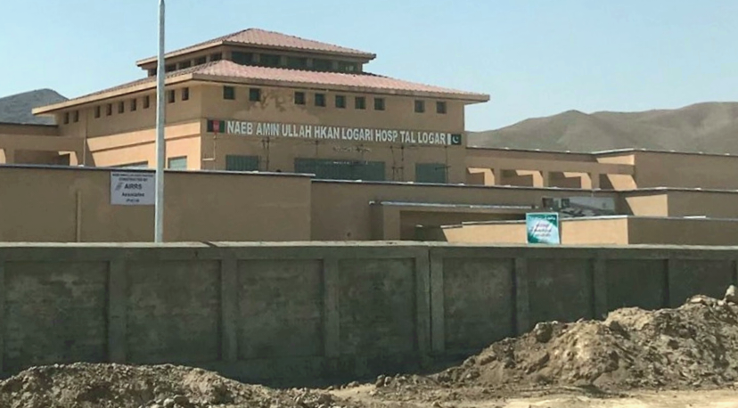
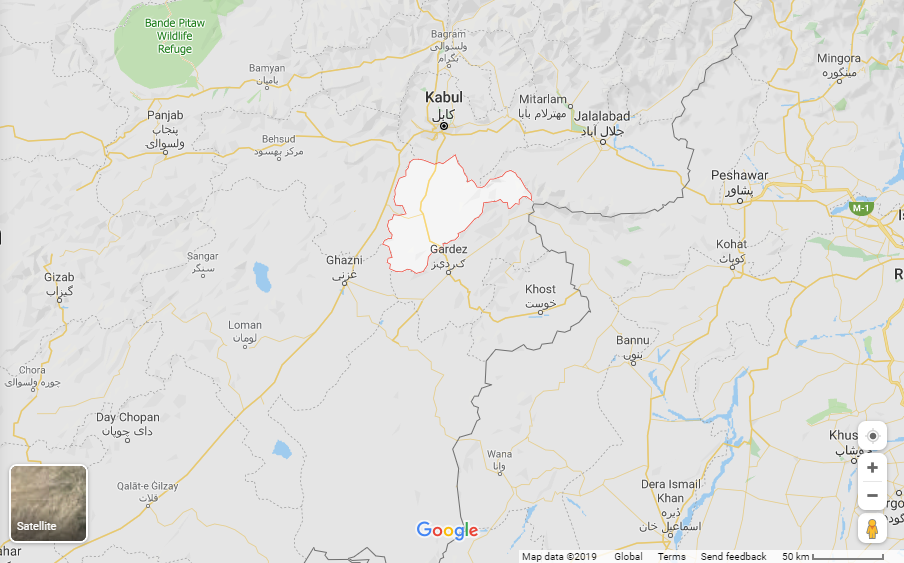
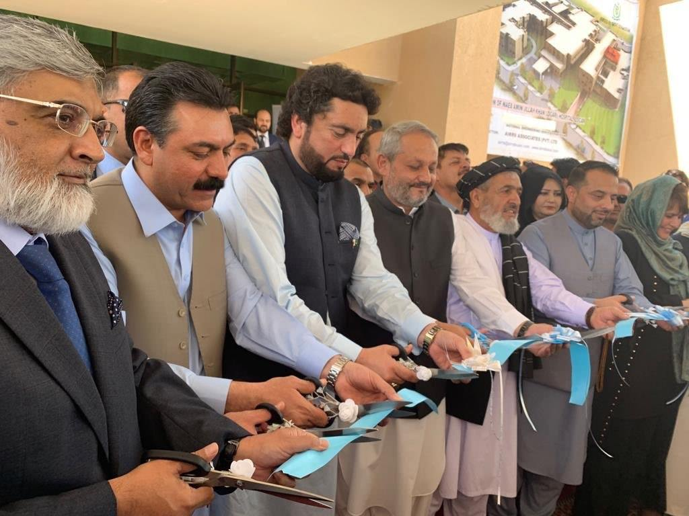

From the people of Pakistan, a 100 bed hospital was inaugurated in Afghanistan.
On the 24th of July, 2019 Pakistan’s Minister for State and Frontier regions Shehryar Afridi inaugurated a 100 Bed hospital in Logar, Afghanistan. This hospital is a gift to the people of Afghanistan from the Government of Pakistan, and had been warmly welcomed by Afghanistan’s Public Health Minister Ferozuddin Feroz.
The hospital built by Pakistan.
The health facility was built at a cost of $18 million and will provide locals with the state of the art modern health facilities. Earlier this year in April, Pakistani Government also inaugurated a 200 Bed hospital in the country’s capital and the largest city, Kabul.
Logar Province
Logar province is one of Afghanistan's most ethnically diverse provinces with having 60% Pashtun majority and 40% remaining Hazara’s and Tajiks. The province also saw one of the worst insurgent attacks which claimed Hundreds of lives.
Shehreyar Afridi inaugurating the Hospital.
As told by Ferozuddin Feroz, the Afghanistan’s Public health minister: this project was launched 10 years ago but due to some tensions in the region and Pak-Afghan relations, the project came to a stand-still until recently when the new Government in Pakistan collaborated with the government in Kabul.